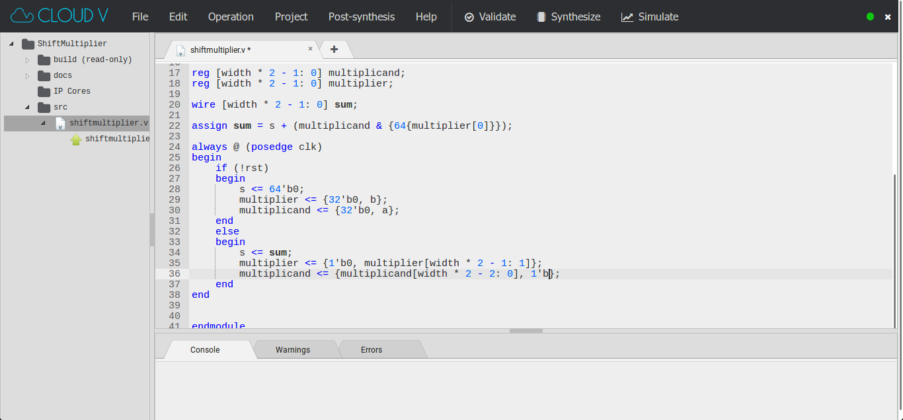

CloudV is an online IDE for Verilog systems. It includes a waveform viewer, git project control, and much more!
Powerful IDE
A robust IDE with all the tools you need to build and manage your projects.
Circuit Simulator
Verilog circuit simulation using open source tools and an interactive waveform viewer.
Verilog Synthesizer
Generate a complete netlist using industry standard libraries.